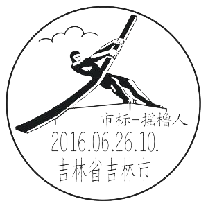
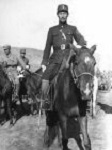
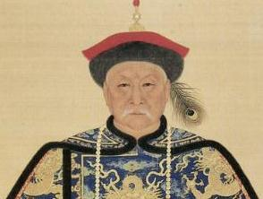
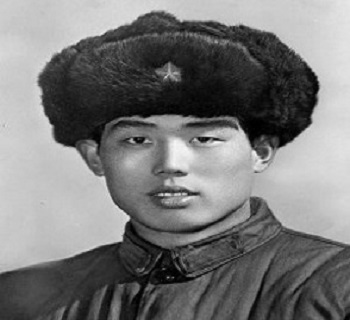

美丽吉林
____之美丽吉林人

历史名人

鳌拜[清](1610-1669)
瓜尔佳·鳌拜（约1610年-1669年），清朝辅政大臣、太子太傅，封爵一等超武公，被誉为“满洲第一勇士”。鳌拜在皮岛之战、松锦会战、西充之战等战役中骁勇无敌，同时也是皇太极忠心耿耿的心腹，于多尔衮对抗中多次被-，其忠心深获顺治帝的赞赏。康熙继位初期，鳌拜作为辅政大臣之一，结党营私操纵权力，被康熙帝用计生擒后，约在1669年老死于禁所。人物生平皮岛之战鳌拜，生年不详，出身将门，精通骑射，从其青年时代起就效力军中，屡立大功。他曾跟随清太宗皇太极攻察哈尔部、征朝鲜，均有战绩。天启年间，辽东失陷于后金之后，明...[详情] 巴海[清](?-1696)
巴海（？～1696），瓜尔佳氏，满洲镶兰旗（镶黄旗）人。清顺治九年（1652）壬辰科麻勒吉榜进士第三人。巴海是沙尔虎达的长子。顺治九年，满洲榜与汉人榜同年科考，殿赐巴海满洲榜探花。顺治十四年（1657），巴海累迁，秘书院侍读学士。顺治十六年，他袭父一等男爵，顺治帝谕吏部：“沙尔虎达驻防年久，甚得人心，今已病故，他的儿子巴海平素以勤慎著称，堪代他的父亲生前的职务，授为宁古塔总管”。巴海承袭父职后，一次，他向朝廷奏报：清军在石勒喀河地区古法坛村与俄罗斯的阿凡那西·费里波维奇·帕什科夫所率部俄军...[详情] 程砚秋 京剧“四大名旦”
程砚秋（1904年1月1日一1958年3月9日），男，原名承麟，满族索绰罗氏，满洲正黄旗人。北京人，后改为汉姓程，初名程菊侬，后改艳秋，字玉霜。1932年起更名砚秋，改字御霜。著名京剧表演艺术家，著名京剧旦角，著名京剧艺术大师，著名京剧演员，四大名旦之一，程派艺术的创始人。程砚秋出生在1904年12月20日，光绪三十年十一月十四日酉时 ；幼年家道中落，六岁投荣蝶仙门下，练武功，向荣春亮习武生。一年后向名武生教师丁永利学戏，后因扮相秀丽，改从陈桐云习花旦，后发现嗓音极佳，改学青衣，师从陈啸云。程砚秋童年基...[详情]
瓜尔佳·鳌拜（约1610年-1669年），清朝辅政大臣、太子太傅，封爵一等超武公，被誉为“满洲第一勇士”。鳌拜在皮岛之战、松锦会战、西充之战等战役中骁勇无敌，同时也是皇太极忠心耿耿的心腹，于多尔衮对抗中多次被-，其忠心深获顺治帝的赞赏。康熙继位初期，鳌拜作为辅政大臣之一，结党营私操纵权力，被康熙帝用计生擒后，约在1669年老死于禁所。人物生平皮岛之战鳌拜，生年不详，出身将门，精通骑射，从其青年时代起就效力军中，屡立大功。他曾跟随清太宗皇太极攻察哈尔部、征朝鲜，均有战绩。天启年间，辽东失陷于后金之后，明...[详情] 巴海[清](?-1696)
巴海（？～1696），瓜尔佳氏，满洲镶兰旗（镶黄旗）人。清顺治九年（1652）壬辰科麻勒吉榜进士第三人。巴海是沙尔虎达的长子。顺治九年，满洲榜与汉人榜同年科考，殿赐巴海满洲榜探花。顺治十四年（1657），巴海累迁，秘书院侍读学士。顺治十六年，他袭父一等男爵，顺治帝谕吏部：“沙尔虎达驻防年久，甚得人心，今已病故，他的儿子巴海平素以勤慎著称，堪代他的父亲生前的职务，授为宁古塔总管”。巴海承袭父职后，一次，他向朝廷奏报：清军在石勒喀河地区古法坛村与俄罗斯的阿凡那西·费里波维奇·帕什科夫所率部俄军...[详情] 程砚秋 京剧“四大名旦”
程砚秋（1904年1月1日一1958年3月9日），男，原名承麟，满族索绰罗氏，满洲正黄旗人。北京人，后改为汉姓程，初名程菊侬，后改艳秋，字玉霜。1932年起更名砚秋，改字御霜。著名京剧表演艺术家，著名京剧旦角，著名京剧艺术大师，著名京剧演员，四大名旦之一，程派艺术的创始人。程砚秋出生在1904年12月20日，光绪三十年十一月十四日酉时 ；幼年家道中落，六岁投荣蝶仙门下，练武功，向荣春亮习武生。一年后向名武生教师丁永利学戏，后因扮相秀丽，改从陈桐云习花旦，后发现嗓音极佳，改学青衣，师从陈啸云。程砚秋童年基...[详情]
军事政治名人

刘英俊 雷锋式的共产主义战士
刘英俊，1945年4月8日生于吉林省长春市二道河子区一个农民家庭。解放前，一家人住在一座破砖窑里，缺衣少食，过着艰难困苦的生活。1948年10月，中国人民解放军解放了长春，刘英俊一家分得了田地，过上了幸福生活。1953年，刘英俊进了二道河子车站完全小学校读书。他从小爱学习、爱劳动、遵守纪律，曾被学校评为“勤工俭学模范”、“优秀少先队员”，多次受到共青团长春市委、共青团二道河子区委的表扬和奖励。1962年6月，刘英俊在父母的支持下主动报名参军。因他是独子，当地政府和亲属都劝他留在父母身边，可刘英俊参军的志向坚定，...[详情] 万福麟 东北名将 (1880～1951)
万福麟（1880—1951），吉林农安人。当时任国民党军第五十三军军长。万福麟出身靖威军列兵，官至东北军陆军上将，沈阳解放前夕去台湾。 万福麟，国民党上将，东北军张学良的部下，曾任黑龙江省督办、辽宁省主席、二十集团军副总司令等职。简介万福鳞（1880年一1951年） 字寿山，祖籍直隶宁河（今天津市宁河县）官庄．生于吉林省农安县（今吉林省长岭县）．因家贫，幼年便给财主家扛活，放牧牛马，故乡人称他为“万半拉子”．光绪二十六年（1900年），八国联军侵华，沙俄单独入侵东北．农安乡绅为自保安全，商议组建联庄会，他于...[详情] 费英东 [明] 清初开国五大臣
程砚秋（1904年1月1日一1958年3月9日），男，原名承麟，满族索绰罗氏，满洲正黄旗人。北京人，后改为汉姓程，初名程菊侬，后改艳秋，字玉霜。1932年起更名砚秋，改字御霜。著名京剧表演艺术家，著名京剧旦角，著名京剧艺术大师，著名京剧演员，四大名旦之一，程派艺术的创始人。程砚秋出生在1904年12月20日，光绪三十年十一月十四日酉时 ；幼年家道中落，六岁投荣蝶仙门下，练武功，向荣春亮习武生。一年后向名武生教师丁永利学戏，后因扮相秀丽，改从陈桐云习花旦，后发现嗓音极佳，改学青衣，师从陈啸云。程砚秋童年基...[详情]
刘英俊，1945年4月8日生于吉林省长春市二道河子区一个农民家庭。解放前，一家人住在一座破砖窑里，缺衣少食，过着艰难困苦的生活。1948年10月，中国人民解放军解放了长春，刘英俊一家分得了田地，过上了幸福生活。1953年，刘英俊进了二道河子车站完全小学校读书。他从小爱学习、爱劳动、遵守纪律，曾被学校评为“勤工俭学模范”、“优秀少先队员”，多次受到共青团长春市委、共青团二道河子区委的表扬和奖励。1962年6月，刘英俊在父母的支持下主动报名参军。因他是独子，当地政府和亲属都劝他留在父母身边，可刘英俊参军的志向坚定，...[详情] 万福麟 东北名将 (1880～1951)
万福麟（1880—1951），吉林农安人。当时任国民党军第五十三军军长。万福麟出身靖威军列兵，官至东北军陆军上将，沈阳解放前夕去台湾。 万福麟，国民党上将，东北军张学良的部下，曾任黑龙江省督办、辽宁省主席、二十集团军副总司令等职。简介万福鳞（1880年一1951年） 字寿山，祖籍直隶宁河（今天津市宁河县）官庄．生于吉林省农安县（今吉林省长岭县）．因家贫，幼年便给财主家扛活，放牧牛马，故乡人称他为“万半拉子”．光绪二十六年（1900年），八国联军侵华，沙俄单独入侵东北．农安乡绅为自保安全，商议组建联庄会，他于...[详情] 费英东 [明] 清初开国五大臣
程砚秋（1904年1月1日一1958年3月9日），男，原名承麟，满族索绰罗氏，满洲正黄旗人。北京人，后改为汉姓程，初名程菊侬，后改艳秋，字玉霜。1932年起更名砚秋，改字御霜。著名京剧表演艺术家，著名京剧旦角，著名京剧艺术大师，著名京剧演员，四大名旦之一，程派艺术的创始人。程砚秋出生在1904年12月20日，光绪三十年十一月十四日酉时 ；幼年家道中落，六岁投荣蝶仙门下，练武功，向荣春亮习武生。一年后向名武生教师丁永利学戏，后因扮相秀丽，改从陈桐云习花旦，后发现嗓音极佳，改学青衣，师从陈啸云。程砚秋童年基...[详情]
科学名人
刘永才 中国工程院院士
刘永才（1942.12.21- ）飞航技术专家。吉林省长春市人。1966年毕业于中国人民解放军军事工程学院。现任中国航天科工集团公司科技委、中国航天科工飞航技术研究院科技委顾问，国家某重点型号系列技术顾问、院信息化顾问、国家重大科技工程专家组总体组组长。任总装科技委兼职委员，中国宇航学会无人飞行器分会高级顾问，中国数学会均匀设计分会名誉理事长、国内多所大学兼职教授、博士生导师。历任多个型号的副总设计师、总设计师、型号总指挥，院科技委副主任、集团公司科技委常委。 长期在科研第一线从事飞航装备的设计、试验和制...[详情] 张洪杰 中国科学院院士
张洪杰，无机化学家。中国科学院长春应用化学研究所研究员。1953年9月22日出生于吉林省榆树市，籍贯吉林长春。1978年毕业于北京大学化学系，1985年在中国科学院长春应用化学研究所获硕士学位，1993年在法国波尔多第一大学获博士学位。 长期从事稀土材料的基础与应用研究。发展了快速溶胶-凝胶制备新方法，解决了稀土杂化发光材料稳定性差的难题， 获得了一系列性能优异的稀土杂化发光材料；系统研究了稀土离子发射强度、能量传递与环境温度之间的关系，解决了稀土发光材料温敏涂层全表面精确测量和快速获得模型表面热流分布的关键...[详情] 杨宝峰 中国工程院院士
杨宝峰（1957.11.27- ）药理学家。吉林省松源市人。1988年毕业于华中科技大学（原同济医科大学）并获药理学博士学位。先后赴日本、加拿大留学。分别被美国、俄罗斯、日本、澳大利亚等国际著名院校聘为客座教授及荣誉教授。现任中国工程院医药卫生学部主任，国家重点学科药理学科、药理学国家级教学团队及国家科技创新群体带头人、中华医学会副会长、黑龙江省科协副主席、中国药理学会心血管药理专业委员会名誉主任委员。 主要从事心血管系统药物研究。评价了50余种作用于心血管系统药物，发现心脏离子通道的作用特性并提出离子通道...[详情]
刘永才（1942.12.21- ）飞航技术专家。吉林省长春市人。1966年毕业于中国人民解放军军事工程学院。现任中国航天科工集团公司科技委、中国航天科工飞航技术研究院科技委顾问，国家某重点型号系列技术顾问、院信息化顾问、国家重大科技工程专家组总体组组长。任总装科技委兼职委员，中国宇航学会无人飞行器分会高级顾问，中国数学会均匀设计分会名誉理事长、国内多所大学兼职教授、博士生导师。历任多个型号的副总设计师、总设计师、型号总指挥，院科技委副主任、集团公司科技委常委。 长期在科研第一线从事飞航装备的设计、试验和制...[详情] 张洪杰 中国科学院院士
张洪杰，无机化学家。中国科学院长春应用化学研究所研究员。1953年9月22日出生于吉林省榆树市，籍贯吉林长春。1978年毕业于北京大学化学系，1985年在中国科学院长春应用化学研究所获硕士学位，1993年在法国波尔多第一大学获博士学位。 长期从事稀土材料的基础与应用研究。发展了快速溶胶-凝胶制备新方法，解决了稀土杂化发光材料稳定性差的难题， 获得了一系列性能优异的稀土杂化发光材料；系统研究了稀土离子发射强度、能量传递与环境温度之间的关系，解决了稀土发光材料温敏涂层全表面精确测量和快速获得模型表面热流分布的关键...[详情] 杨宝峰 中国工程院院士
杨宝峰（1957.11.27- ）药理学家。吉林省松源市人。1988年毕业于华中科技大学（原同济医科大学）并获药理学博士学位。先后赴日本、加拿大留学。分别被美国、俄罗斯、日本、澳大利亚等国际著名院校聘为客座教授及荣誉教授。现任中国工程院医药卫生学部主任，国家重点学科药理学科、药理学国家级教学团队及国家科技创新群体带头人、中华医学会副会长、黑龙江省科协副主席、中国药理学会心血管药理专业委员会名誉主任委员。 主要从事心血管系统药物研究。评价了50余种作用于心血管系统药物，发现心脏离子通道的作用特性并提出离子通道...[详情]
娱乐名人
闫学晶
闫学晶，1972年2月7日生于吉林省辽源市东辽县，毕业于吉林省戏曲学校，二人转表演艺术家，国家一级演员。现在中国人民解放军海军政治部文工团工作，正师级待遇。2001年成功出演《刘老根》中的“山杏”而被观众所熟知和喜爱，并从二人转舞台转向影视舞台。2006年获得第四届中国曲艺牡丹奖表演奖 。2007年被海政文工团特招入伍成为部队演员 。2007年凭第一次主演的电视剧《都市外乡人》获得第26届电视剧“飞天奖”优秀女演员提名...[详情] 沙溢
沙溢，1978年2月15日出生于吉林省长春市，中国大陆影视演员。1997年考入中国人民解放军艺术学院戏剧系，2001年毕业进入了空军政治部话剧团，2002年，参演《炊事班的故事》系列，获得第16届 “金星奖”优秀演员奖。2006年凭借《武林外传》中白展堂，而被观众所熟知。2012年因《王的盛宴》中萧何的出色表现，获得中国电影表演艺术学会奖，被赞是一个可以驾驭多种角色的演员。2014年主演电视剧《秀才遇到兵》。...[详情] 李思思
李思思，1986年11月4日出生于吉林省长春市。中国内地节目主持人。毕业于北京大学新闻与传播学院。 2005年，以大一学生身份参加央视三套《挑战主持人》节目，并成持人》节目，并成持人》节目，并成持人》节目，并成为该节目史上第一位八期女擂主。[1] 2006年，再次参加CCTV《挑战主持人》综艺节目主持人全国选拔赛，并荣获季军。[1] 2012年至2016年，连续五次担任中央电视台春节联欢晚会主会场主持人。...[详情]
闫学晶，1972年2月7日生于吉林省辽源市东辽县，毕业于吉林省戏曲学校，二人转表演艺术家，国家一级演员。现在中国人民解放军海军政治部文工团工作，正师级待遇。2001年成功出演《刘老根》中的“山杏”而被观众所熟知和喜爱，并从二人转舞台转向影视舞台。2006年获得第四届中国曲艺牡丹奖表演奖 。2007年被海政文工团特招入伍成为部队演员 。2007年凭第一次主演的电视剧《都市外乡人》获得第26届电视剧“飞天奖”优秀女演员提名...[详情] 沙溢
沙溢，1978年2月15日出生于吉林省长春市，中国大陆影视演员。1997年考入中国人民解放军艺术学院戏剧系，2001年毕业进入了空军政治部话剧团，2002年，参演《炊事班的故事》系列，获得第16届 “金星奖”优秀演员奖。2006年凭借《武林外传》中白展堂，而被观众所熟知。2012年因《王的盛宴》中萧何的出色表现，获得中国电影表演艺术学会奖，被赞是一个可以驾驭多种角色的演员。2014年主演电视剧《秀才遇到兵》。...[详情] 李思思
李思思，1986年11月4日出生于吉林省长春市。中国内地节目主持人。毕业于北京大学新闻与传播学院。 2005年，以大一学生身份参加央视三套《挑战主持人》节目，并成持人》节目，并成持人》节目，并成持人》节目，并成为该节目史上第一位八期女擂主。[1] 2006年，再次参加CCTV《挑战主持人》综艺节目主持人全国选拔赛，并荣获季军。[1] 2012年至2016年，连续五次担任中央电视台春节联欢晚会主会场主持人。...[详情]

地址：东北吉林省吉林市
信息管理：北华大学经纬工作室
管理员信箱：1047713853@qq.com
版权所有 北华大学 计算机科学技术学院 吉ICP备0258900号-11